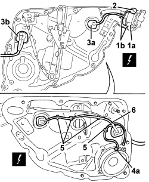
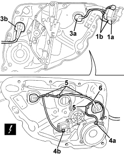

5505B20 REAR DOOR WIRING (ONE) LEFT OR RIGHT - R.R WITH WATER GUARD OR FRAME DETACHED
- Path
- Procedures > 55 ELECTRICAL EQUIPMENT > 5505 INSTRUMENT/GAUGE ELECTRICAL CIRCUITS > 5505B DOOR, BOOT AND BONNET WIRING > 5505B20 REAR DOOR WIRING (ONE) LEFT OR RIGHT - R.R WITH WATER GUARD OR FRAME DETACHED
- Kind
- repair procedure (removal / refitting; the operation number is the code)
- Applies to
- all engines; all production periods; only with equipment: High setup and Low setup
- Interactive page
- https://sloeber94.github.io/elrnDB/alfa/159/en/#/939010983
Applies to: all engines; all production periods; only with equipment: Low setup
 Removing
Removing
 Refitting
Refitting1. Disconnect lock (1a) from retainers (1b).
2. Disconnect the electrical connection.
Description | Component |
|---|---|
LEFT REAR DOOR LOCK GEARED MOTOR | |
RIGHT REAR DOOR LOCK GEARED MOTOR |
3. Prise bulkhead coupling seals (3a and 3b) from the chassis.
4. Tilt the chassis and disconnect the electrical connections.
Description | Component |
|---|---|
LEFT REAR SPEAKER | |
RIGHT REAR SPEAKER |
5. Release the wiring retainers from the chassis.
6. Recover the wiring by withdrawing from the upper part.

Applies to: all engines; all production periods; only with equipment: Low setup
Refitting
Removing- Check that the wiring is not damaged and that the individual conducts are correctly fastened to the connections.
- If necessary, carry out continuity tests.
- Position the wiring and attach the retainers.
- Fit the bulkhead coupling seals to the chassis.
- Connect the electrical connections.
- Connect the lock to the retainers.
Applies to: all engines; all production periods; only with equipment: High setup
Removing
Refitting1. Disconnect lock (1a) from retainers (1b).
2. Disconnect the electrical connection.
Description | Component |
|---|---|
LEFT REAR DOOR LOCK GEARED MOTOR | |
RIGHT REAR DOOR LOCK GEARED MOTOR |
3. Prise bulkhead coupling seals (3a and 3b) from the chassis.
4. Tilt the chassis and disconnect the electrical connections (4a) and (4b).
Description | Component |
|---|---|
LEFT REAR SPEAKER | |
RIGHT REAR SPEAKER |
Description | Component |
|---|---|
DRIVER'S FRONT ELECTRIC WINDOW MOTOR | |
PASSENGER SIDE FRONT ELECTRIC WINDOW MOTOR |
5. Release the wiring retainers from the chassis.
6. Recover the wiring by withdrawing from the upper part.

Applies to: all engines; all production periods; only with equipment: High setup
Refitting
Removing- Check that the wiring is not damaged and that the individual conducts are correctly fastened to the connections.
- If necessary, carry out continuity tests.
- Position the wiring and attach the retainers.
- Fit the bulkhead coupling seals to the chassis.
- Connect the electrical connections.
- Connect the lock to the retainers.
Topics linked from this page (6)
- N055 LEFT REAR DOOR LOCK GEARED MOTOR
- N056 RIGHT REAR DOOR LOCK GEARED MOTOR
- N060 DRIVER'S FRONT ELECTRIC WINDOW MOTOR
- N061 RIGHT FRONT ELECTRIC WINDOW MOTOR
- P030 LEFT REAR SPEAKER
- P031 RIGHT REAR SPEAKER